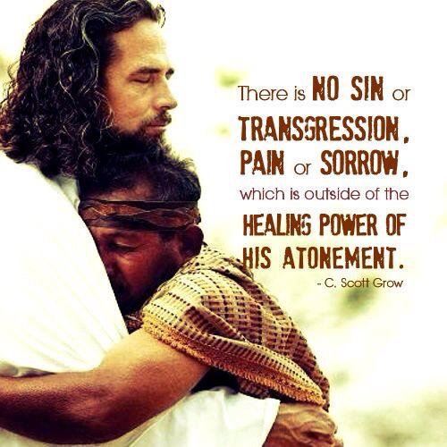

HEALING in the Atonement
Listen to the sermon:
God loves the people of this town therefore we are falling in love with the people He loves.
The way of love will take us into our destiny.
The Good News of the Kingdom of God
Jesus travelled about from one town and village to another, proclaiming the good news of the Kingdom of God. Luke 8:1 (NIV)
They were amazed at His teaching, because His message had authority. Luke 4:32 (NIV)
exousia (ἐξουσία, 1849) denotes "authority" (from the impersonal verb exesti, "it is lawful"). From the meaning of "leave or permission," or liberty of doing as one pleases, it passed to that of "the ability or strength with which one is endued," then to that of the "power of authority," the right to exercise power, e.g., Matt. 9:6; 21:23; 2 Cor. 10:8; or "the power of rule or government," the power of one whose will and commands must be obeyed by others, Vine, W. E., Unger, M. F., & White, W. (1996). Vine's complete expository dictionary of Old and New Testament words (2:45). Nashville: T. Nelson.
All the people were amazed and said to each other, "What words these are! With authority and power he gives orders to impure spirits and they come out!" And the news about him spread throughout the surrounding area. Luke 4:36-37 (NIV)
At sunset, the people brought to Jesus all who had various kinds of sickness, and laying his hands on each one, he healed them. Moreover, demons came out of many people, shouting, "You are the Son of God!"... Luke 4:40-41 (NIV)
But he said, "I must proclaim the good news of the kingdom of God to the other towns also, because that is why I was sent."And he kept on preaching in the synagogues of Judea. Luke 4:43-44 (NIV)
Message of the Kingdom of God has the authority to manifest God's way of doing things here upon earth.
- Salvations
- Healings
- Deliverance
- Nature obeying
- Dead being raised.
- etc etc ...
Why does it have such authority?
Because Jesus is the Message. He is the Word.
In the beginning was the Word, and the Word was with God, and the Word was God. He was with God in the beginning. Through him all things were made; without him nothing was made that has been made. In him was life, and that life was the light of all mankind. The light shines in the darkness, and the darkness has not overcome John 1: 1-18 (NIV)
That, however, is not the way of life you learned when you heard about Christ and were taught in him in accordance with the truth that is in Jesus. Eph 4:20-21 (NIV)
The Message continued...
When evening came, many who were demon-possessed were brought to him, and he drove out the spirits with a word and healed all the sick. This was to fulfil what was spoken through the prophet Isaiah: "He took up our infirmities and bore our diseases." Matt 8:16-17 (NIV)
Surely he took up our infirmities and carried our sorrows, yet we considered him punished by God, stricken by him, and afflicted. But he was pierced for our transgressions, he was crushed for our iniquities; the punishment that brought us peace was on him, and by his wounds we are healed. Isaiah 53:4-5 (NIV)
Isaiah 53:4
| Infirmities : kholee | - Sickness - Disease - Grief |
Sorrows: makob| - Pain both physical & mental | - Grief |
Matt 8: 17
| Infirmities: astheneia |
- Sickness - Disease - Weakness - |
want of strength and capacity requisite to understand a thing |
| Diseases : nosos | - Disease - Sickness |
to do things great and glorious to restrain corrupt desires to bear trials and troubles |
Isaiah 53:5
... and by his wounds we are healed.
Wounds - bruise, stripe, wound, blow.
Reference to Christ's body on the cross
Jesus took our infirmities and diseases at the same time he was wounded for our transgressions, and was bruised for our iniquities. Physical infirmities were taken as well as spiritual sins.
v4 Surely he took up (sicknesses) and v12 For he bore (sins)
The same Hebrew word – nasa
Psalm 103: 1-5
Praise the LORD, my soul; all my inmost being, praise his holy name. 2 Praise the LORD, my soul, and forget not all his benefits— 3 who forgives all your sins and heals all your diseases, 4 who redeems your life from the pit and crowns you with love and compassion, 5 who satisfies your desires with good things so that your youth is renewed like the eagle's.
| Forget not | - forget - cease to care |
Scripture quotations marked (NIV) are taken from the Holy Bible, New International Version®, NIV®. Copyright © 1973, 1978, 1984, 2011 by Biblica, Inc.™ Used by permission of Zondervan. All rights reserved worldwide. www.zondervan.com The "NIV" and "New International Version" are trademarks registered in the United States Patent and Trademark Office by Biblica, Inc.™